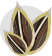
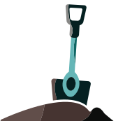
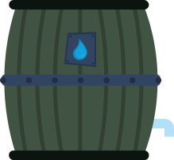

Leer duurzaam tuinieren
Laten we even helemaal van de Ceuvel afstappen. Na de vorige pagina’s gelezen te hebben hoop ik je een beetje te hebben geinspireerd. Hier gaan we duurzaam leren tuinieren. Dus pak je schep en je potgrond en draag je eigen steentje bij aan een duurzamer stukje grond.
Maar waar te beginnen?
Kies voor lokale zaden
Koop je zaden in bij lokale kwekerijen. Zo weet je zeker dat ze niet met enorme vrachtschepen de wereld over zijn gevlogen.
Composteer als een pro
Verzamel keukenafval zoals fruit en groenteschillen. Deze zijn ontzettend goed voor de vruchtbaarheid van je grond.
Bouw eeen duurzame moestuin
Onderzoek ‘combinatieteelt’. Zo kan je veel verschillende gewassen naast elkaar planten op een vruchtbare grond.

Waterbesparingstechnieken
Instaleer een regenton in je tuin. Deze vangt water op, wat je kan gebruiken om je planten water te geven. Scheelt weer!
Praktische workshops
Neem deel aan lokale tuinworkshops voor een goede hands-on training. Leer van experts en stel vragen.
Nu je gewapend bent met kennis en enthousiasme, houdt niks je meer tegen. Start je eigen groene revolutie. Dus grijp je schep omarm de aarde en laat jou tuin een voorbeeld worden van duurzaamheid. Elk zaadje dat je plant, elke composthoop die je aanlegt draagt bij aan een duurzamere wereld. Dus, waar wacht je nog op?